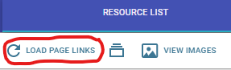
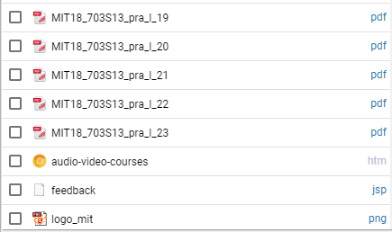
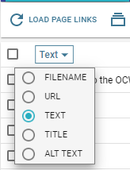
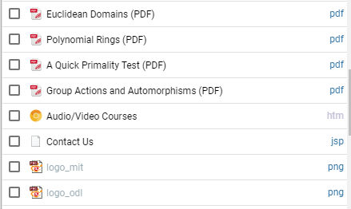
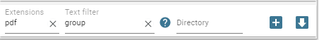
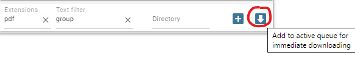
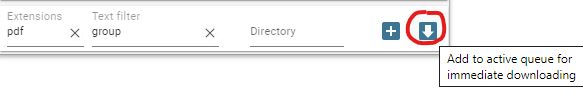
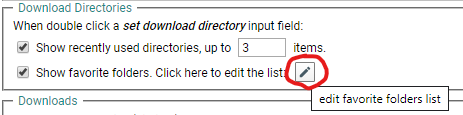
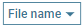

Otherwise, for every item in the download queue you will be prompted to choose a name via a Save As dialog (try to figure out what that means for a list of, say, 500 downloads or more)!
Basic usage
The user go to some web page, right click and from the contextual menu choose the . This will show a quick download dialog:
The user checks de desired file types (in our case pdfs) and optionally choose a download directory (defined as a subfolder of the Chrome main Downloads directory) and finally clicks the Download now button.
The files start to download and, if all goes well, the user will found them in the Downloads/Algebra subfolder.
That's all!
Tip: If the user make a text selection on the web page, the addon will try to include only the links from that selection
(the context menu will also include the option  )
)
This workflow lacks advanced filtering/renaming options but may be appropriate in many situations.
A more flexible workflow
The general idea of the addon is to first collect links to the resources list (with optional filtering) and next to add checked items to the download queue either as active items (that is, items that start downloading immediately) either as passive items (if the user needs to edit/rename them before downloading)
-
Go to some web page (with many resources, for example pdfs, epubs etc), activate the extension popup and click there the Load page
links button:
This usually fills the resources list with all sort of links, not only the desired pdfs.Note that the addon display files, by default, using the (estimated) file names. But sometimes it is better to display links using the text attribute (what the user usually see on web pages). So, for a better orientation, you can choose the text as displayed attribute and now you see something as 
- Now, the next step is to filter this list, such that only desirable links stay here.
The most obvious type of filtering is by extension. You can start filtering process by writingpdfin the dedicated extensions field (orpdf epub docif you seek more types). If necessary, you can refine filtering using the textfilter fieldNote that the textfilter uses by default the attribute currently used for displaying items (by defaultFILENAME, but in our caseTEXT).
A more advanced usage may involve more attributes, for example,text:group url:algebra(this shows only items withgroupterm inside text attribute andalgebraterm inside their url). Click the corresponding help button for more filtering details (this help button is visible only the textfilter field is focused).
for more filtering details (this help button is visible only the textfilter field is focused).
-
Now you have isolated all desired pdf. Next check all items at once (using the top main checkbox) or only a range (using
shift + click) and finally click the download now button from bottom-right corner 
 -
The items start downloading. A finished item looks like:
You can directly open the file clicking its name or open the directory where the file was downloaded using the corresponding folder icon.

Setting a custom download directory
By default, all downloaded files go to the Chrome global download directory  (usually named Downloads)
(usually named Downloads)
algebra/groups in the dedicated directory field. Now all downloaded files go specifically to the Downloads/Algebra/Groups subfolder.
Some tips:
- You can first define a set of favorite folders. For this, go to the addon settings ,
on Download directories section: - You can use some name masks on directory names. For example
Algebra {yyyy}/Groupswill generate the subfolders pathDownloads/Algebra 2019/Groups. Click the corresponding help button for more details.
Batch renaming
In many cases, the user can accept the default filenames, leaving unchanged the  as displayed
name for the resources list and next clicking for immediate downloading (after checking desired items).
But, sometimes, it's better to do some batch renaming before downloading and, in this case, the user will click on the other button
 . This will simply add the checked items to the (passive) download list:
. This will simply add the checked items to the (passive) download list:
FILENAME).Of course, the user can start single items or edit their name/directory using the corresponding buttons
for more details (this help button is visible only when the name masks field is focused).
Note that there is a
Select all button and also is possible to select only a range of items using shift + click
Some random tips
-
Those items from the resource list that are also on the download list use a distinctive color for their checkboxes (
 or
or  )
and cannot be sended again on download list (unless they are first removed from the download list). So, in general, you should not worry for sending the same file multiple times on the download list.
)
and cannot be sended again on download list (unless they are first removed from the download list). So, in general, you should not worry for sending the same file multiple times on the download list.
- The extension remembers if an item was downloaded in the current session or recent history and make them visible on the resource list using a green color text
-
Note that the user may get all attributes/information available for an individual item from the resource list by right-clicking it.
This will open an informative popup with all attributes available for that item (
url/title/textetc.), including a thumbnail view for image type items (see the image above for an example). -
On the download list the user can move up/down a group of selected items by using
ctrl + up/down arrow keys. This can be useful when using contor masks, for example. -
The user can adjust the addon popup width using the button
 (three value toggle).
(three value toggle).
What's next
There are many other features. For example:
-
The links can be imported from clipboard, from a text file or generated using a
Pattern URLdialog
Also, the links can be exported using a flexible mask system (this can be useful if the user wants to use the generated list with an external file downloader). See the menu button.
menu button.
- The user can create complex filters and save them as custom categories (see the Custom Categories section from the settings dialog)
- The addon has a built-in routing system (see the Automatic Folders section from the settings dialog). Here the user can define custom folders where downloads can be automatically directed based on user-defined rules.
- For images, there is also a special thumbnails view where items may be filtered by size or ordered by size descending order
- The addon has (an experimental) tabs dialog where the user selects tabs (active tab, all tabs, left or right tabs) and optionally filters pages items by various criteria. Finally, the found links are added to the resource list and ready for further operation (see the button).